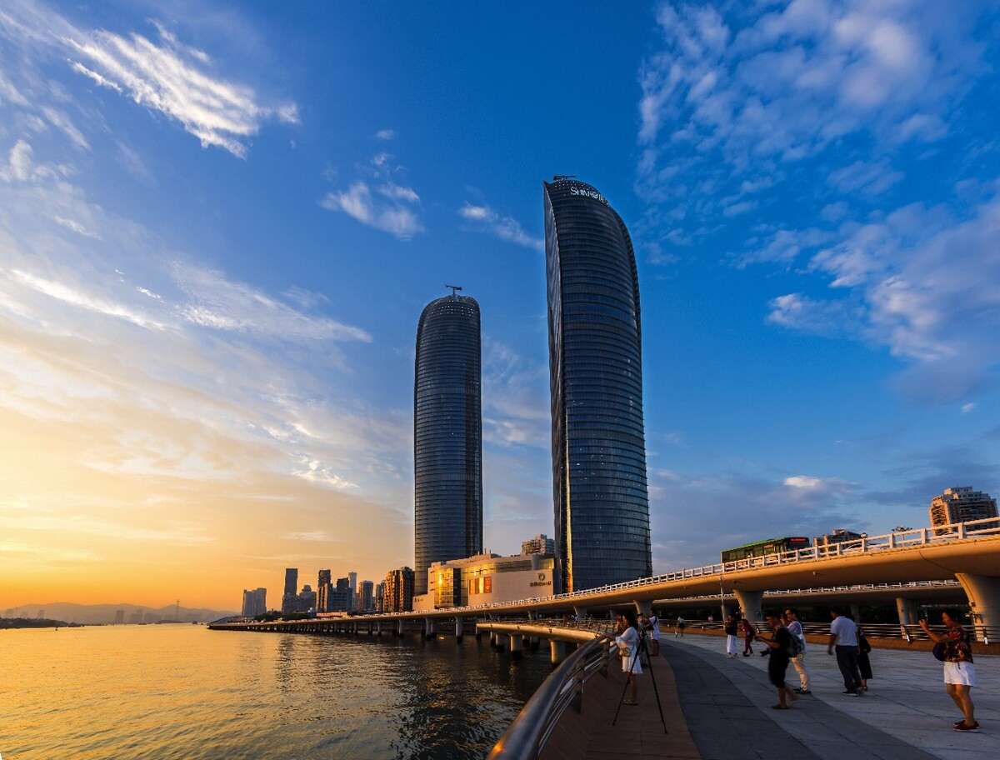
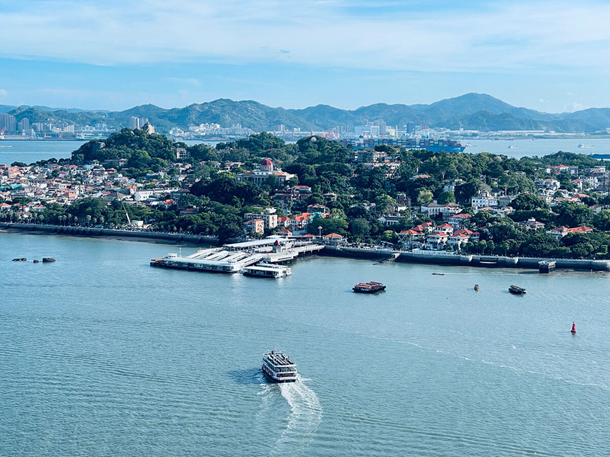

通知公告

厦门游记
- 总要来趟厦门吧
- 走走中山路，逛逛鼓浪屿
- 吹吹白城沙滩的晚风，看看百年厦大
- 感受一下鹭岛的夏天
- 即使都是片刻
- 也是值得留念的永恒
- 有趣的人生都是山川湖海
- 窗外是一望无际的蓝色画板
- 海风是寄来的温柔明信片
- 接着夏天来临的名义
- 我们一起去看海吧
在线留言
关于厦门
厦门，隶属于福建省，别称鹭岛， 简称厦、鹭， 副省级城市、经济特区，东南沿海重要的中心城市、港口及风景旅游城市。 厦门位于福建省东南端， 西界漳州， 北邻南安和晋江，东南与大小金门和大担岛隔海相望，通行闽南方言，是闽南地区的主要城市，与漳州、泉州并称厦漳泉闽南金三角经济区。
1980年10月7日，批复设立经济特区，厦门先后获批开发开放类国家综合配套改革试验区，自由贸易试验区，厦门已成为两岸新兴产业和现代服务业合作示范区、东南国际航运中心、两岸区域性金融服务中心和两岸贸易中心。

厦门由本岛厦门本岛、离岛鼓浪屿、西岸海沧半岛、北岸集美半岛、东岸翔安半岛、大小嶝岛、内陆同安、九龙江等组成，陆地面积1699.39平方公里，海域面积390多平方公里。21世纪厦门逐渐成为现代化国际性港口风景旅游城市，拥有世界文化遗产、第一批国家5A级旅游景区——鼓浪屿
至1995年，厦门市有全日制高校8所，即厦门大学、鹭江职业大学以及集美大学所属的航海学院、水产学院、体育学院、财经学院、师范学院、工商管理学院。此外还有市广播电视大学开设的普通专科班。在校学生总人数17823人，教职员工5255人。 2012年末，全市共有普通高等学校17所，学年初招生数4.81万人，在校学生数15.78万人。